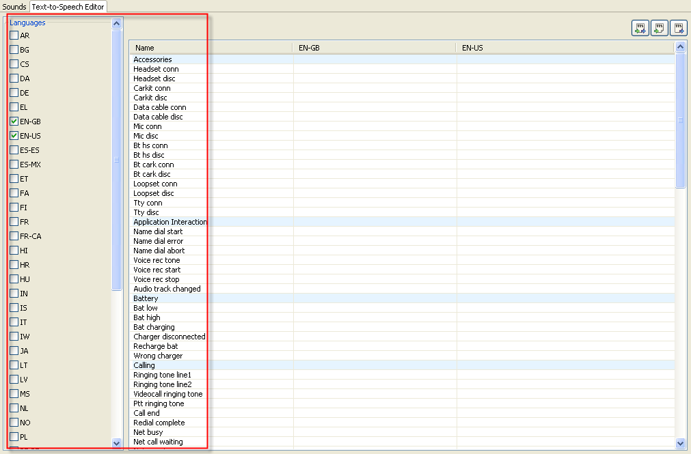

TTS Editor Tab
Use TTS editor if you want to localize Text-to-Speech texts for more
then one language. TTS editor allows easy localization of texts for a
number of languages in one place (see
Figure:
TTS Editor Tab).
- Select one or more languages you want to localise. The list of
columns grows as you select languages.
- Double-click the cell you want to localise and enter the text.
- Select Enter to complete the changes.
You can also:
- Export all TTS texts to a
file.
- Add/Merge the current TTS
texts with ones from an earlier exported file.
- Replace the current TTS texts with ones from the exported file

Figure: TTS Editor Tab